продукты
🌸🌷
| 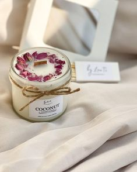 |
Интерьерная ароматическая свеча “Шампанское с клубникой” – настоящее произведение искусства! Каждая свеча изготавливается вручную. Её аромат наполняет пространство нежной сладостью и свежестью клубники. 🍓✨
А теперь, давайте вдохнем вместе этот волшебный запах! (200) |
| 🧊🍹 |
| 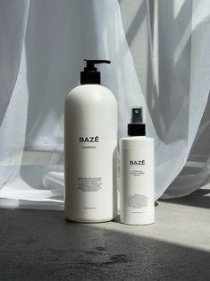 |
Шампуни с лавандой – это не только средства для ухода за волосами, но и настоящее ароматное удовольствие.⭐️(216) |
| 🍯🩰 |
| 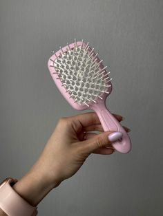 |
Расческа от фирмы kaya beauty для Волос – это мягкая подвижная расческа, идеально подходящая для легкого расчесывания как сухих, так и влажных волос. Она получила много положительных отзывов от пользователей🎀(315) |
| 🎧🧴 |
| 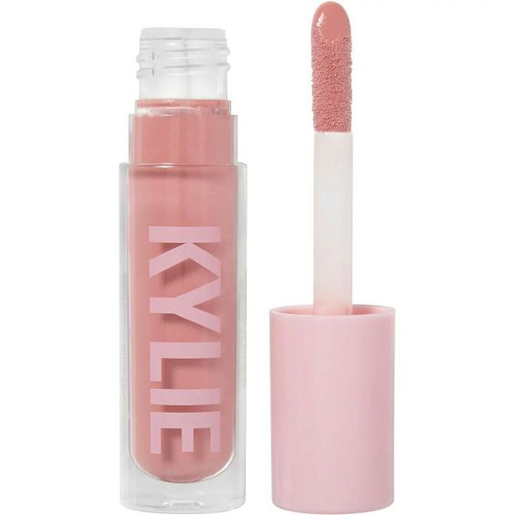 |
Лето — время ярких образов и нежных оттенков помады! Если вы хотите подчеркнуть свою женственность, розовая губная помада — отличный выбор. Вот вариан розовой помады, которая могжет стать вашими верными спутниками в этот солнечный сезон❤️(400) |
| 💜💍 |
| 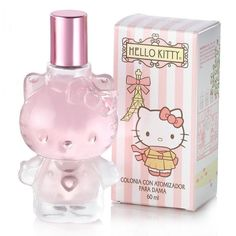 |
Реклама духов Hello Kitty в розовом стиле – это что-то, что точно привлечет внимание! 🌸
Хотя Hello Kitty обычно ассоциируется с милыми рисунками и детской атмосферой, реклама духов с этим персонажем может быть удивительно стильной и элегантной 🍬(500) |
| 🐝✨✨✨ |
 |
Гель для душа – это не только средство для очищения, но и возможность окунуться в ароматный мир и заботиться о своей коже.🍉🍉(134) |
| ✨☄️ |
| 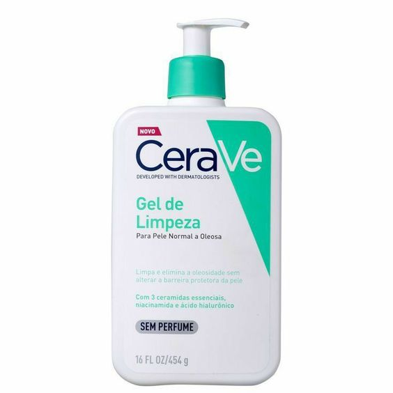 |
Пенки для умывания лица — это относительно новое поколение очищающих средств. Они отличаются от привычных гелей для умывания встроенным пенообразователем, который позволяет получить мягкую пенку с пониженным содержанием поверхностно-активных веществ ⭐️(400) |
| ⚡️☀️ |
| 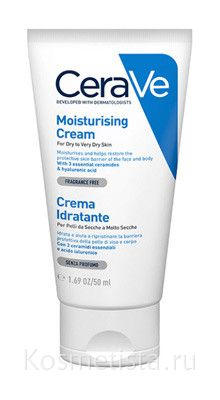 |
Увлажнение кожи — важный этап ухода за лицом. Если пренебрегать им, кожа может стать обезвоженной, что проявится мелкими морщинками, шелушениями и ощущением стянутости. 😝(200) |
| 💥🔥 |
| 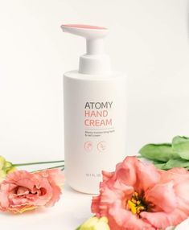 |
Atomy Hand Cream - крем для рук, который обеспечивает обильное увлажнение и питание огрубевшим рукам и ногтям.😌(340) |
| 🥝🍪 |
| 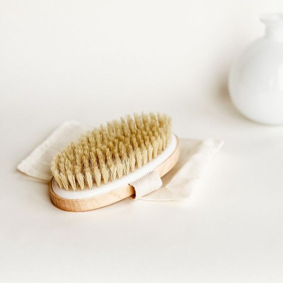 |
без этой расчески у вас не выйдет масаж!, она вам поможет раслабиться, и спомощью её подтянуть кожу!😏 (400) |
| 🎤🛍 |
| 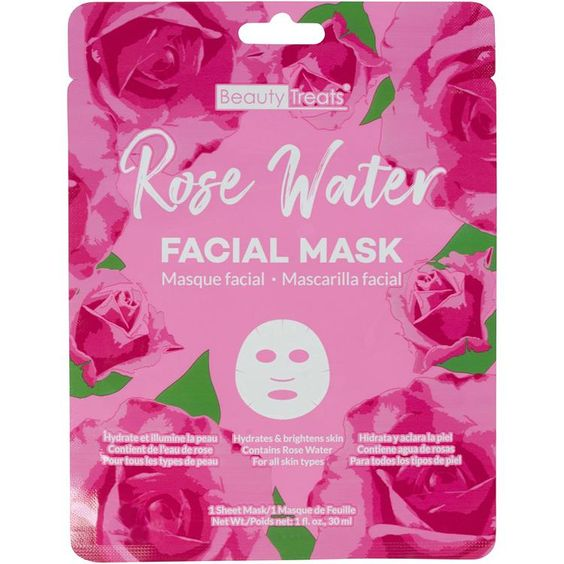 |
Омолаживающие маски для лица — это прекрасный способ улучшить состояние кожи, придать ей свежий вид и справиться с некоторыми возрастными изменениями.🐚🌸(80) |
| 🖼🎶 |
| 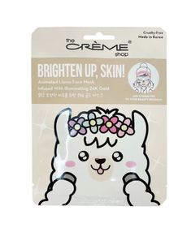 |
эта прекрасная маска, сделает лицо как и лама на маске!🦙🌼(50) |
| 🍬🍫 |
| 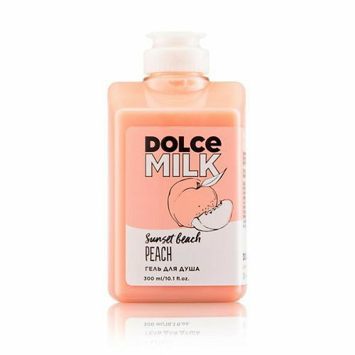 |
гель для душа! он и не только красивый на упаковке, так еще и на запах и качество.🦩🍑(400) |
| конец🤗 |